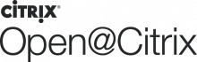
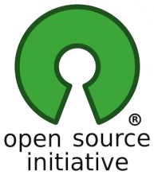
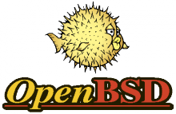
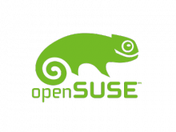
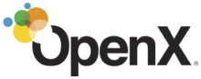
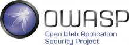

Omnibond is experienced in guiding collaborations among open source, academic, and business communities. Our software engineering and support efforts focus on infrastructure software, including Massive Parallel File Data Storage (OrangeFS) and making it easily available (CloudyCluster on AWS). We advocate open source development, offering development and marketing resources supporting OrangeFS for high-performance cluster computing, as well as acilos, a social media aggregator.
Exhibitors
Special Event Sponsor
One Course Source, Inc. began as a courseware development company. Drawing on years of courseware design, OCS developed and distributed courseware to training sites and classrooms with the major focus primarily on Open Source technologies, including Linux, UNIX, Perl, Python and Tcl.
After years of successful courseware development, One Course Source branched out to provide other products and services related to training. OCS's courseware development experience has lead to the creation of a new series of classes designed to assist students in obtaining their Linux certifications.

Silver Sponsor
Citrix supports the open source community via developer support and evangelism. Citrix has a number of developers and evangelists that participate actively in the open source community in Apache Cloudstack, OpenDaylight, Xen Project and XenServer. We also conduct educational activities via the Build A Cloud events held all over the world. For more information, please visit open.citrix.com.

The Open Source Initiative (OSI) is a non-profit corporation with global scope formed to educate about and advocate for the benefits of open source and to build bridges among different constituencies in the open source community.
Open source is a development method for software that harnesses the power of distributed peer review and transparency of process. The promise of open source is better quality, higher reliability, more flexibility, lower cost, and an end to predatory vendor lock-in.

The OpenBSD project produces a FREE, multi-platform 4.4BSD-based UNIX-like operating system. The project's efforts emphasize portability, standardization, correctness, proactive security and integrated cryptography.
Gold Sponsor
The OpenNMS Group is the corporate entity behind the award winning 100% free and open source OpenNMS enterprise grade network management application platform. They provide commercial consulting, support, training and custom development services in addition to acting as maintainers for the project.

Gold Sponsor
The openSUSE project is a community program sponsored by SUSE. Promoting the use of Linux everywhere, openSUSE.org provides free, easy access to the world's most usable Linux distribution, openSUSE. The openSUSE project gives Linux developers and enthusiasts everything they need to get started with Linux.

OpenX is a global leader in digital and mobile advertising technology focused on maximizing ad revenue for digital media companies on any digitally connected screen. We work with some of the best known brands in the industry, including over 65% of the Comscore 100, and 96 of the top 100 AdAge advertising brands. Our vision as a company is to unleash the full economic potential of digital media companies. We provide a unique Software as a Service (SAAS) platform that combines ad serving, a top tier ad exchange, a Supply Side Platform (SSP), along with mobile inventory solutions.

The Open Web Application Security Project (OWASP) is a 501(c)(3) worldwide not-for-profit charitable organization focused on improving the security of software. Our mission is to make software security visible, so that individuals and organizations worldwide can make informed decisions about true software security risks.
ownCloud provides universal access to your files via the web, your computer or
your mobile devices — wherever you are.
It also provides a platform to easily view & sync your contacts, calendars and
bookmarks across all your devices and enables basic editing right on the web.
Getting started is easy: ownCloud runs on almost every server and doesn’t have
complicated dependencies. We also offer VM images, easy installation tutorials
for Raspberry Pi like devices and have an extensive list of providers offering
hosted ownCloud!